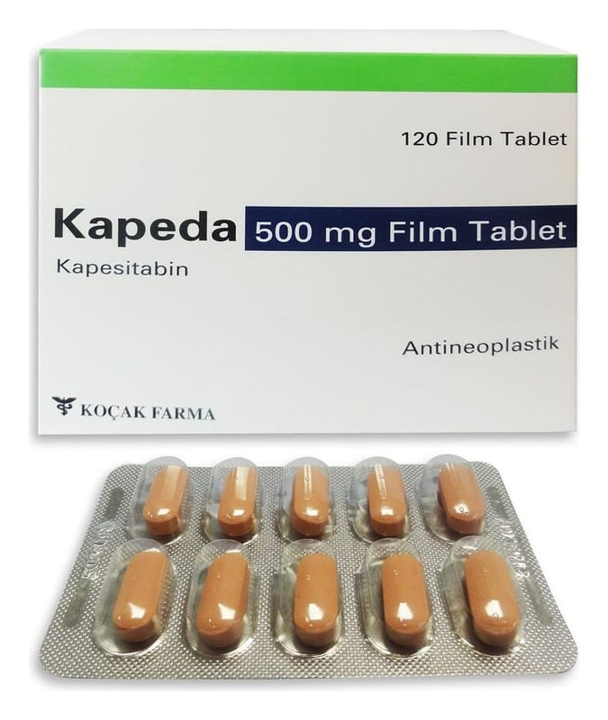

Kapeda 500 mg Film Tablet, 120 Adet

Ne için kullanılır
KT · Bölüm 1• KAPEDA, kanser hücrelerinin büyümesini durduran, “Sitostatik ajanlar” adlı ilaç grubuna aittir.
• KAPEDA, kendisi sitotoksik (hücreyi öldüren veya fonksiyonlarını durduran) bir ajan olmayan, 500 mg kapesitabin içerir. Vücut tarafından emildikten sonra tümör hücresinin içinde sitotoksik bir maddeye dönüşür. • KAPEDA 500 mg film kaplı tablet kutusu 120 adet film kaplı tablet içermektedir (10 tabletlik 12 blister). KAPEDA 500 mg açık pembe renkli film kaplı tabletler oblong biçimindedir. • KAPEDA, kalın barsak, kalın barsağın uç kısmı (rektum), mide veya meme kanserlerinin tedavisinde kullanılır. Ayrıca KAPEDA, kalın barsak kanserinin yeniden oluşumunu önlemek amacıyla ameliyatla tümörün tamamen çıkarılmasından sonra doktorunuz tarafından reçete edilebilir. • KAPEDA tek başına veya diğer ajanlarla kombinasyon halinde kullanılabilir.